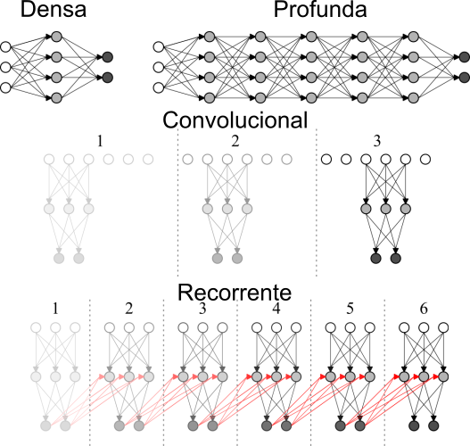
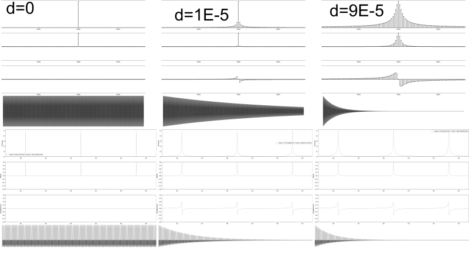
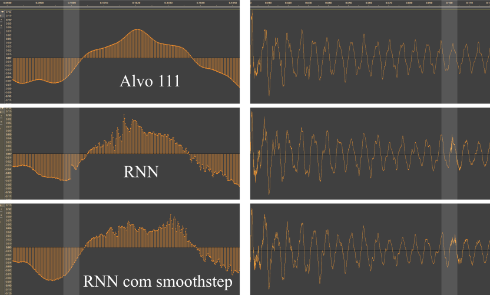

Created with MarkPres
github.com/tesserato/MarkPres
UNIVERSIDADE FEDERAL FLUMINENSE
ESCOLA DE ENGENHARIA
PROGRAMA DE PÓS-GRADUAÇÃO EM ENGENHARIA DE PRODUÇÃO
Redes Neurais Aplicadas à Modelagem de Instrumentos Acústicos para Síntese Sonora em Tempo Real
Carlos Tarjano
Orientador: Prof. Dr. Valdecy Pereira
Niterói, 31 / 07 / 2018
Introdução
Objetivo: Elaborar um modelo baseado em ANNs para emulação de instrumentos em tempo real
Mapear o estado da arte da aplicação de ANNs em áreas correlatas
Mapear o estado da arte da modelagem acústica “tradicional”
Investigar o potencial de inclusão de teoria acústica na eficiência
Motivação:
ANNs aplicadas com sucesso em várias áreas
Estado da arte em áreas afins
Poucos trabalhos relacionados a síntese sonora via ANNs (nenhum em tempo real)
Indústria de DMI “estagnada” e hermética
Introdução
Escopo:
Emulação de instrumentos acústicos
Excitação impulsiva
Tempo real
Arquiteturas Neurais consolidadas na literatura
Revisão Bibliográfica
ANNs:
Alguns trabalhos experimentais na década de 1990
Wavenet – bons resultados para voz (Magenta)
A Maioria das plicações de ANNs ocorrem em um nível mais alto de abstração
Modelagem Acústica Tradicional:
Domínio da Frequência (Modelagem Espectral)
Domínio do Tempo (Modelagem Física)
Principais métodos de Modelagem Física:

Digital Waveguide | Diferenças Finitas
Referencial Teórico - Redes Neurais - Arquiteturas

Arquiteturas
Referencial Teórico
Transformada Discreta de Fourier
Transformada Discreta de Fourier
Referencial Teórico - DFT - SIMETRIA

Simetria Transformada de Fourier
Referencial Teórico - DFT
Decaimento: domínio da frequência x domínio do tempo

Decaimentos: ondas simples e compostas
Metodologia
Busca de amostras sonoras:
Variedade, Qualidade, Licença, Organização
Investigação dos modelos tradicionais
Implementação e análise
Domínio do tempo:
Redes Densas – Grid Search (Arquitetura, Função de ativação, Função de Otimização)
Redes Recorrentes + Convolução alisada
Domínio da Frequência:
Busca por representações simplificadas
Aplicação direta de redes Densas | Aplicação fisicamente informada
Metodologia - Modelos Tradicionais: Digital Waveguide
Digital Waveguide
Amostra: 440 Hz, pluck 0.1, pick 0.1
Amostra: 440 Hz, pluck 0.5, pick 0.5
Metodologia - Modelos Tradicionais: Diferenças Finitas
Diferenças Finitas
Amostra: 440 Hz, pluck 0.1, pick 0.1
Amostra: 440 Hz, pluck 0.5, pick 0.5
Metodologia - Domínio do tempo:

Convolução Alisada
Resultados - Domínio do tempo:

Descontinuidades
Resultados - Domínio do tempo:
Alvo
Resultado
Resultado Alisado
Metodologia - Domínio da Frequência:
Método direto para sons mal comportados
Método fisicamente informado para sons harmônicos

Espectros de frequência: Não harmônico x harmônico
Metodologia - Domínio da Frequência - Método Direto:
caixa, contratempo,tambores - 120 008 neurons, 1.4 Mb.
pratos - 360 008 neurons, 9 Mb.
redes com uma camada oculta
Dinâmica Caixa - Centro para Borda
Dinâmica Contratempo - Fraco para Forte
Metodologia - Domínio da Frequência - Método Fisicamente Informado:

Identificação de picos

Identificação de decaimentos
Redes: amplitudes e decaimentos - 5 301 neurons, 100kb | frequências 261 neurons, 50 kb
Metodologia - Domínio da Frequência - Método Fisicamente Informado:
Amostra Piano - tecla 01 A0
Amostra Piano - tecla 49 A4
Amostra Piano - tecla 88 C8
Metodologia - Domínio da Frequência - Modelo Final:

Modelo final
Metodologia - Domínio da Frequência - Modelo Final:
Amostra Hibrido - posição 13 A1
Amostra Hibrido - posição 18 D2
Amostra Hibrido - posição 40 C4
Amostra Hibrido - posição 88 C8
Resultados - Domínio da Frequência:
Método Direto:
Funcional para sons mal comportados (percussão)
Método Fisicamente informado:
Ideal para instrumentos harmônicos
Eficiência 10x maior do que Digital Waveguides (implementação em Python)
Verossimilhança maior do que o método das diferenças finitas
Conclusão
Contribuições:
Apresenta um modelo eficiente para modelagem acústica
Aponta uma nova área de pesquisa, na interseção entre acústica e redes neurais
Apresenta alguns potenciais e limitações dessa área, no domínio do tempo e da frequência
Interpretação geométrica da simetria da transformada discreta de Fourier aplicada à sinais no domínio real.
Relação entre envelopes (domínio do tempo) e formato das elevações (domínio da frequência)
Oportunidades de Pesquisa:
Desenvolvimento de um método de extração de envelopes (possivelmente analítico)
investigar transferência de estilo fazendo uso do método acima
Utilizar Diferenças Finitas para treinar um algoritmo “Neural Waveguides”
Utilizar ANNs no lugar de funções utilizadas em modelos acústicos mais elaborados
Paralelizar as redes